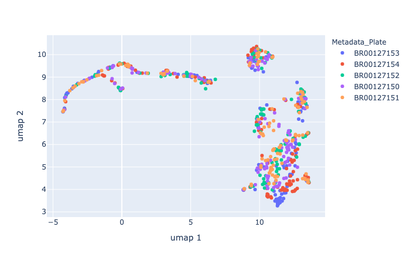
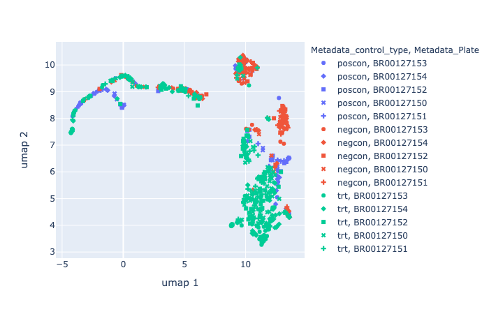
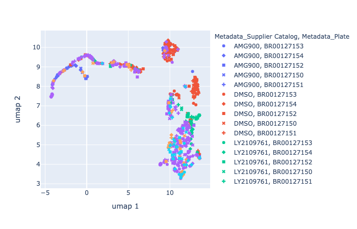

import pandas as pd
from umap import UMAP
import utils
import numpy as np
import plotly.express as pxbatch = "2021_08_30_Batch13"
experiment_metadata = (
pd.read_csv('output/experiment-metadata.tsv', sep='\t')
.query('Batch==@batch')
.query('Plate_Map_Name=="miami_platemap"')
)
experiment_metadata.head()| Batch | Plate_Map_Name | Assay_Plate_Barcode | |
|---|---|---|---|
| 2 | 2021_08_30_Batch13 | miami_platemap | BR00127153 |
| 3 | 2021_08_30_Batch13 | miami_platemap | BR00127154 |
| 4 | 2021_08_30_Batch13 | miami_platemap | BR00127152 |
| 5 | 2021_08_30_Batch13 | miami_platemap | BR00127150 |
| 6 | 2021_08_30_Batch13 | miami_platemap | BR00127151 |
# Read all the profiles
all_plates_df = pd.DataFrame()
for plate in experiment_metadata.Assay_Plate_Barcode.unique():
df = (
utils.load_data(batch, plate, 'normalized_feature_select_negcon_batch.csv.gz')
.assign(Metadata_Row=lambda x: x.Metadata_Well.str[0:1])
.assign(Metadata_Col=lambda x: x.Metadata_Well.str[1:])
)
all_plates_df = utils.concat_profiles(all_plates_df, df)
metadata = utils.get_metadata(all_plates_df)
all_plates_df = all_plates_df.replace(np.inf, np.nan).dropna(axis=1,how="any")# Dimensionality reduction using UMAP
X = utils.get_featuredata(all_plates_df)
umap_2d = UMAP(n_components=2, init='random', random_state=9000)
X_embedded = umap_2d.fit_transform(X)
umap_features = pd.DataFrame({'umap 1': X_embedded[:,:1].flatten(), 'umap 2': X_embedded[:,1:2].flatten()})
embedded_df = pd.concat([metadata, umap_features], axis=1)
embedded_df.head()| Metadata_plate_map_name | Metadata_broad_sample | Metadata_mg_per_ml | Metadata_mmoles_per_liter | Metadata_solvent | Metadata_Plate | Metadata_Well | Metadata_Site_Count | Metadata_Count_Cells | Metadata_Count_CellsIncludingEdges | ... | Metadata_Barcode | Metadata_Supplier | Metadata_Supplier Catalog | Metadata_Alternate Name | Metadata_pert_type | Metadata_control_type | Metadata_Row | Metadata_Col | umap 1 | umap 2 | |
|---|---|---|---|---|---|---|---|---|---|---|---|---|---|---|---|---|---|---|---|---|---|
| 0 | miami_platemap | BRD-K21728777-001-02-3 | 2.50700 | 4.9784 | DMSO | BR00127153 | A01 | 9 | 474 | 560 | ... | NaN | NaN | AMG900 | AMG900 | control | poscon | A | 01 | -4.149757 | 8.085120 |
| 1 | miami_platemap | NaN | NaN | NaN | DMSO | BR00127153 | A02 | 9 | 1990 | 2206 | ... | NaN | NaN | DMSO | DMSO | control | negcon | A | 02 | 10.552545 | 9.901835 |
| 2 | miami_platemap | BRD-K47557313-001-02-7 | 2.21200 | 5.0099 | DMSO | BR00127153 | A23 | 9 | 1752 | 1923 | ... | NaN | NaN | LY2109761 | LY2109761 | control | poscon | A | 23 | 2.890364 | 9.122291 |
| 3 | miami_platemap | NaN | NaN | NaN | DMSO | BR00127153 | A24 | 9 | 1892 | 2098 | ... | NaN | NaN | DMSO | DMSO | control | negcon | A | 24 | 12.998260 | 7.485055 |
| 4 | miami_platemap | BRD-K21728777-001-02-3 | 0.83567 | 1.6595 | DMSO | BR00127153 | B01 | 9 | 511 | 593 | ... | NaN | NaN | AMG900 | AMG900 | control | poscon | B | 01 | -4.016148 | 8.244111 |
5 rows × 26 columns
fig = px.scatter(
data_frame=embedded_df,
x='umap 1',
y='umap 2',
color='Metadata_Plate',
hover_data=['Metadata_broad_sample', 'Metadata_Supplier Catalog','Metadata_Well', 'Metadata_Object_Count']
)
fig.show("png")
fig.update_layout(title='All plates')
fig.write_image('figures/4.all_plates.png', width='1280', height='960', scale=2)
fig.write_html('figures/4.all_plates.html')
embedded_df.Metadata_control_type.replace(np.nan, 'trt', inplace=True)
fig = px.scatter(
data_frame=embedded_df,
x='umap 1',
y='umap 2',
color='Metadata_control_type',
symbol='Metadata_Plate',
hover_data=['Metadata_broad_sample', 'Metadata_Supplier Catalog','Metadata_Well', 'Metadata_Object_Count']
)
fig.show("png")
fig.update_layout(title=f'Grouped by perturbation type')
fig.write_image(f'figures/4.all_plates_perturbation_type.png', width='1280', height='960', scale=2)
fig.write_html(f'figures/4.all_plates_perturbation_type.html')
fig = px.scatter(
data_frame=embedded_df,
x='umap 1',
y='umap 2',
color='Metadata_Supplier Catalog',
symbol='Metadata_Plate',
hover_data=['Metadata_broad_sample','Metadata_Well', 'Metadata_Object_Count']
)
fig.show("png")
fig.update_layout(title=f'Grouped by perturbation type')
fig.write_image(f'figures/4.all_plates_perturbations.png', width='1280', height='960', scale=2)
fig.write_html(f'figures/4.all_plates_perturbation.html')
